国土交通省東北地方整備局長賞
「交流が織りなす第二の家」 ～外国人留学生と地域の人を繋ぐ寮～
宮城県古川工業高等学校 建築科
第32回MIYAGI ARCHITECTURE MIRAI AWARD
2026
テーマ『わたし』らしく輝ける住まい
2026.11.14土
東北工業大学 八木山キャンパス1号館3階 仙台市太白区八木山香澄町35-1
入場無料どなたでも観覧できます
主催 一般社団法人 宮城県建築士事務所協会
宮城県内の高校生・専門学校生・大学校生が、テーマ『わたし』らしく輝ける住まいに取り組んだ作品を展示し、公開審査と表彰式を行います。保護者の方、一般の方も観覧できます。
発表の時刻は前後する場合があります。途中からの入場・退場は自由です。
高校生・専門学校生・大学校生が、自分で考えた住まいやまちを、図面と模型で発表します。建築に興味がある人、ものづくりや絵を描くのが好きな人に、ぜひ見てほしい催しです。
来場プレゼント 来場した学生のみなさんに、ボールペン・定規・水平器など7つの機能がついた多機能ペンを差し上げます（先着300名。なくなり次第終了します）。
将来建築設計を目指す高校生や専門学校の学生達に、夢と希望をもって社会に臨んでいただきたい。その願いを込めて、毎年『みやぎ建築未来賞』を開催し、顕彰を行います。
2008年より、従来の「卒展」を市民とともに建築を知る月間の催事に合わせ、顕彰の範囲を広げて継続しています。
第32回は5校から22作品の出展があります。テーマは『わたし』らしく輝ける住まいです。各作品のプレゼンテーションボードと模型写真は、掲載の準備が整い次第このページでお知らせします。
テーマ『愛を感じる住まい』／2025年11月15日（土） 東北学院大学 五橋キャンパス 404教室。大賞を先頭に、賞の序列の順で掲げます。学校名までの掲載とし、出展者のお名前は載せていません。
みやぎ建築未来賞 大賞（高等学校の部）／宮事協Ｗｅｂ大賞（高等学校の部）
宮城県石巻工業高等学校 建築科
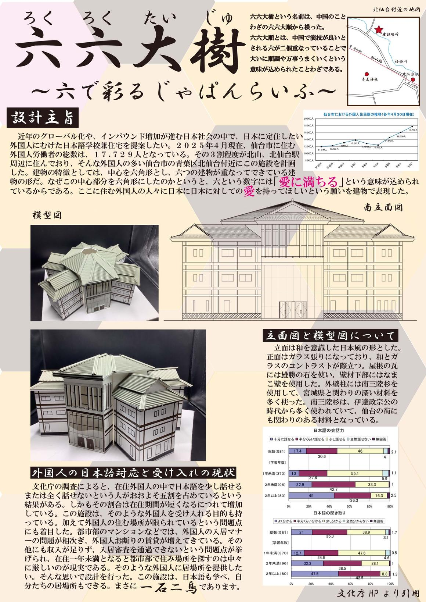
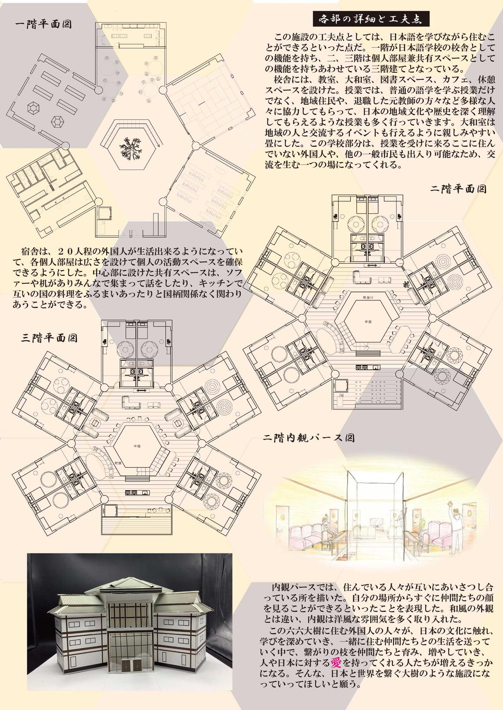
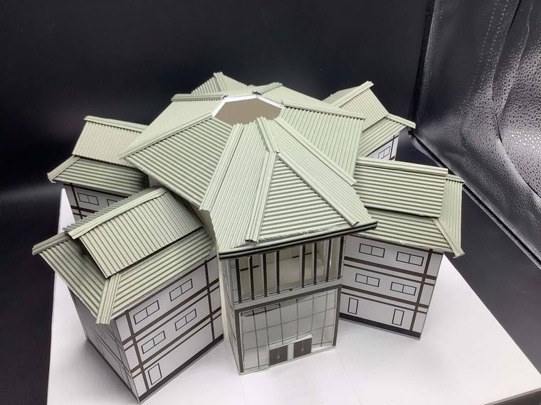
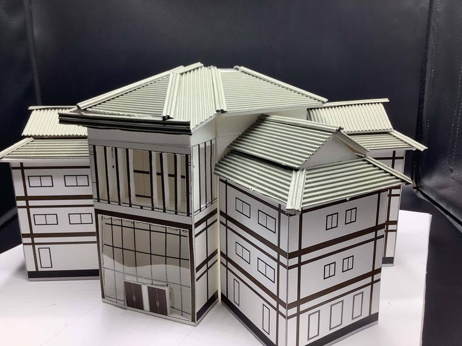
みやぎ建築未来賞 大賞（専門学校・大学校の部）／宮事協Ｗｅｂ大賞（専門学校・大学校の部）／ベストプレゼン賞
仙台工科専門学校 建築デザイン科
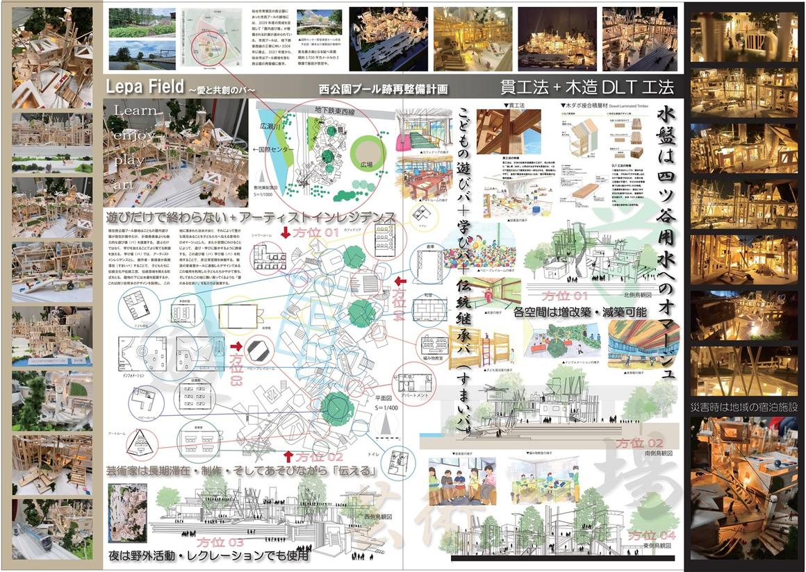
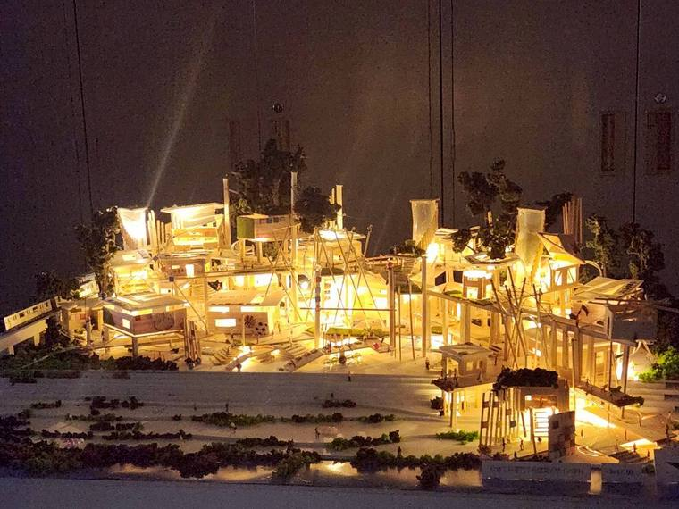
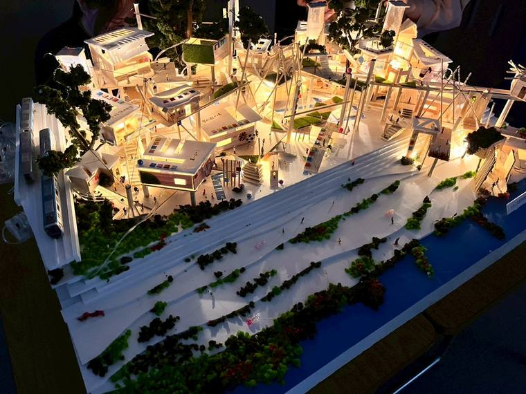
国土交通省東北地方整備局長賞
宮城県古川工業高等学校 建築科
宮城県知事賞
仙台市立仙台工業高等学校 建築科
仙台市長賞
仙台市立仙台工業高等学校 建築科
宮城県教育委員会教育長賞
東北電子専門学校 建築科
仙台市教育委員会教育長賞
宮城県石巻工業高等学校 建築科
（一社）日本建築士事務所協会連合会 会長賞
宮城県石巻工業高等学校 建築科
（一社）宮城県建築士事務所協会賛助会 会長賞
宮城県白石工業高等学校 建築科
（一社）宮城県建築士事務所協会 仙台支部長賞
宮城県石巻工業高等学校 建築科
第31回みやぎ建築未来賞2025に、下記の企業・事務所からご協賛をいただきました。
「第31回みやぎ建築未来賞2025」に際しまして多大なご協賛をいただき、ありがとうございました。
第27回2021以降の各回の大賞です。学校名までの掲載とし、出展者のお名前は載せていません。
大賞 高等学校の部
仙台市立仙台工業高等学校 建築科
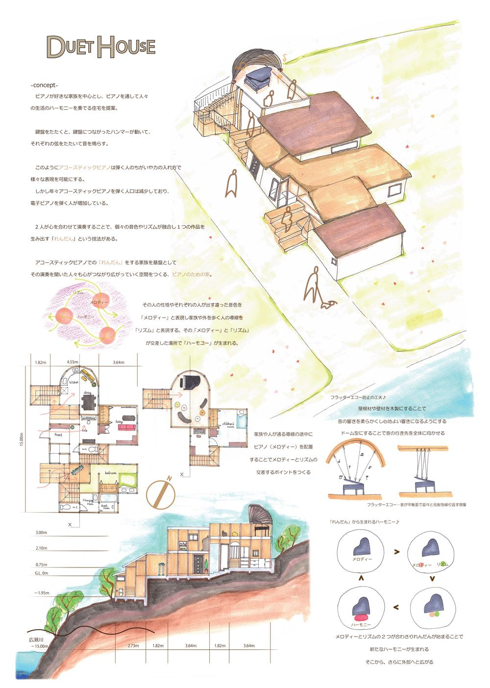
大賞 専門学校・大学校の部
東北職業能力開発大学校 住居環境科
同時受賞 宮事協Ｗｅｂ大賞（専門学校・大学校の部）
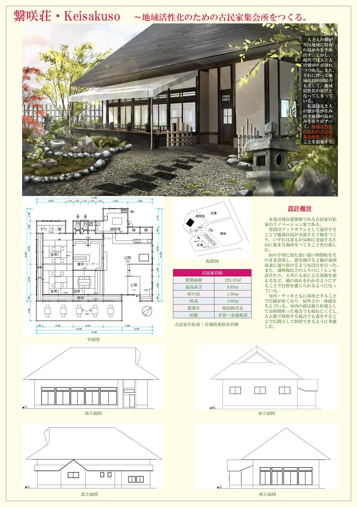
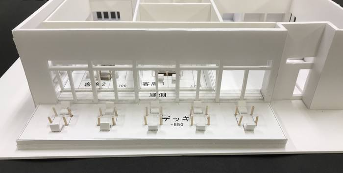
大賞 高等学校の部
仙台市立仙台工業高等学校 建築科
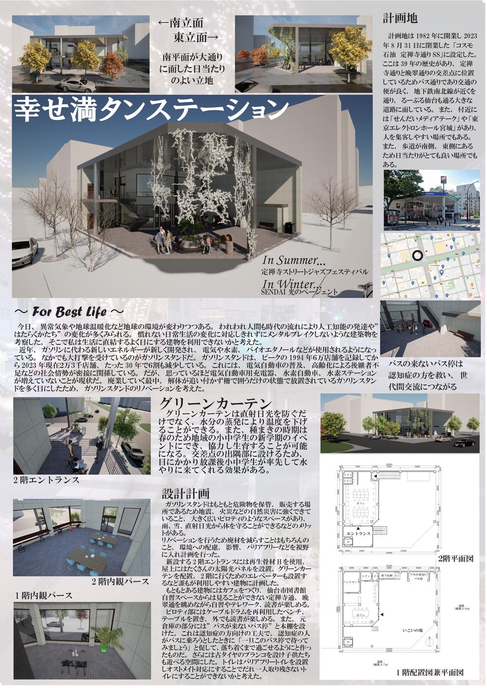
大賞 専門学校・大学校の部
東北文化学園専門学校 インテリア科
同時受賞 宮事協Ｗｅｂ大賞（専門学校・大学校の部）
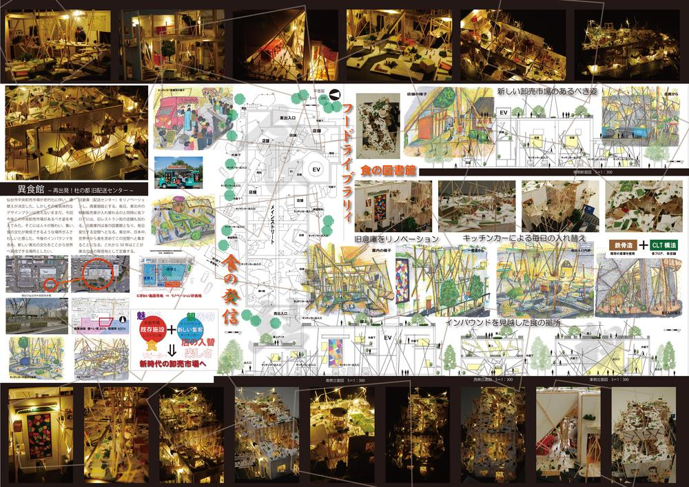
大賞 高等学校の部
宮城県白石工業高等学校 建築科
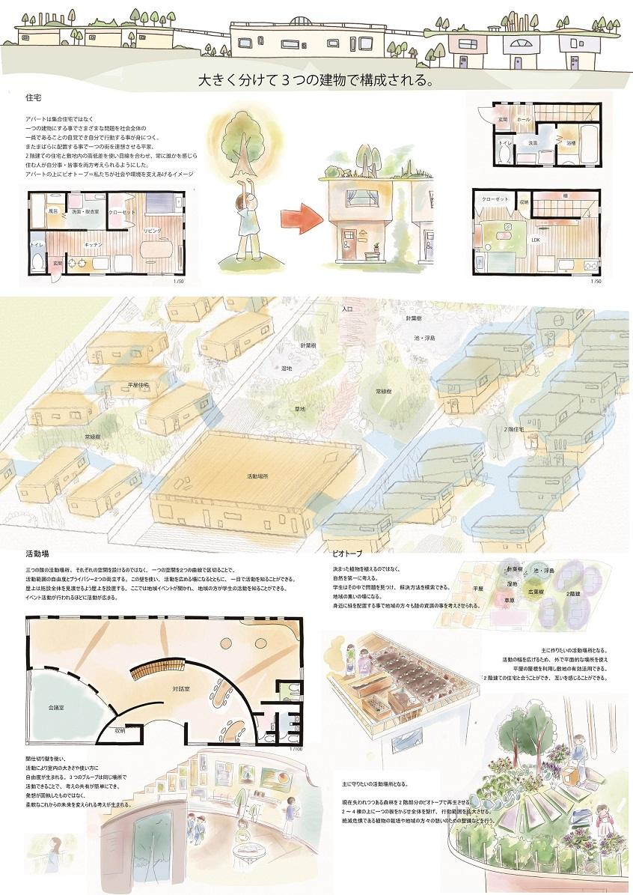
大賞 専門学校・大学校の部
東北文化学園専門学校 インテリア科
同時受賞 宮事協Ｗｅｂ大賞（専門学校・大学校の部）
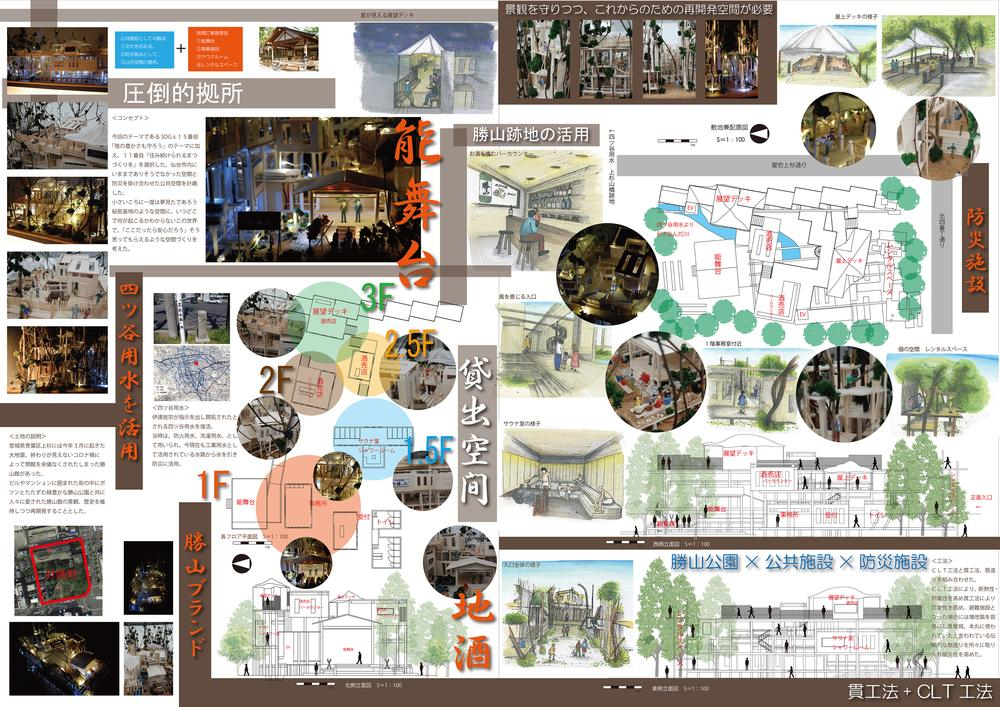
大賞 高等学校の部
仙台市立仙台工業高等学校 建築科
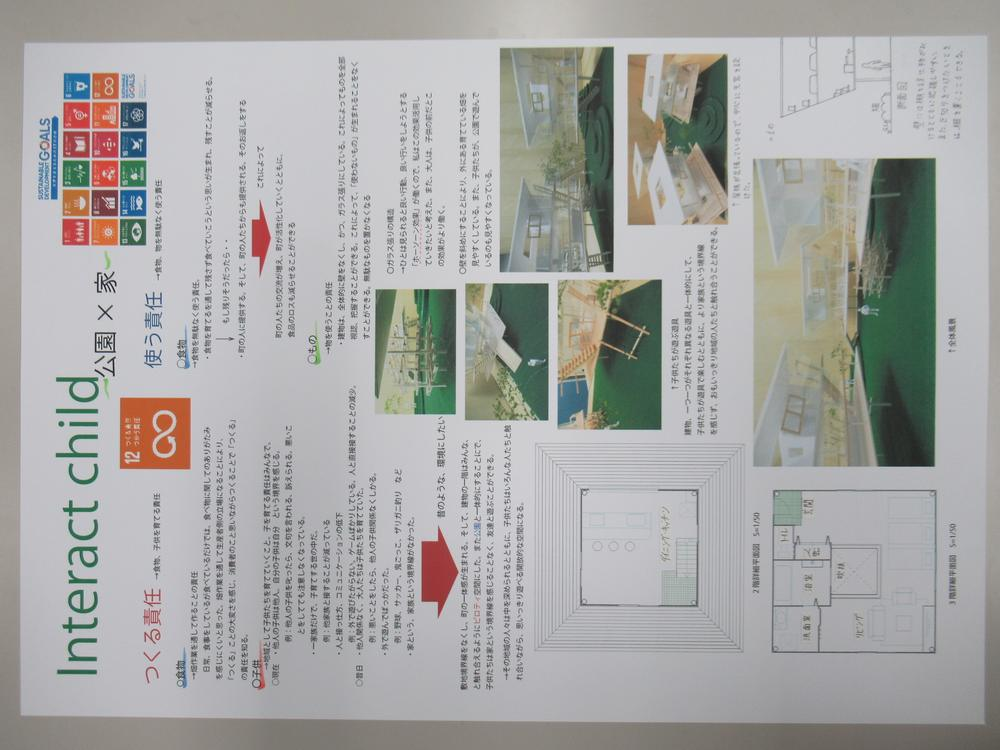
大賞 専門学校・大学校の部
東北文化学園専門学校 インテリア科
同時受賞 宮事協Ｗｅｂ大賞（専門学校・大学校の部）
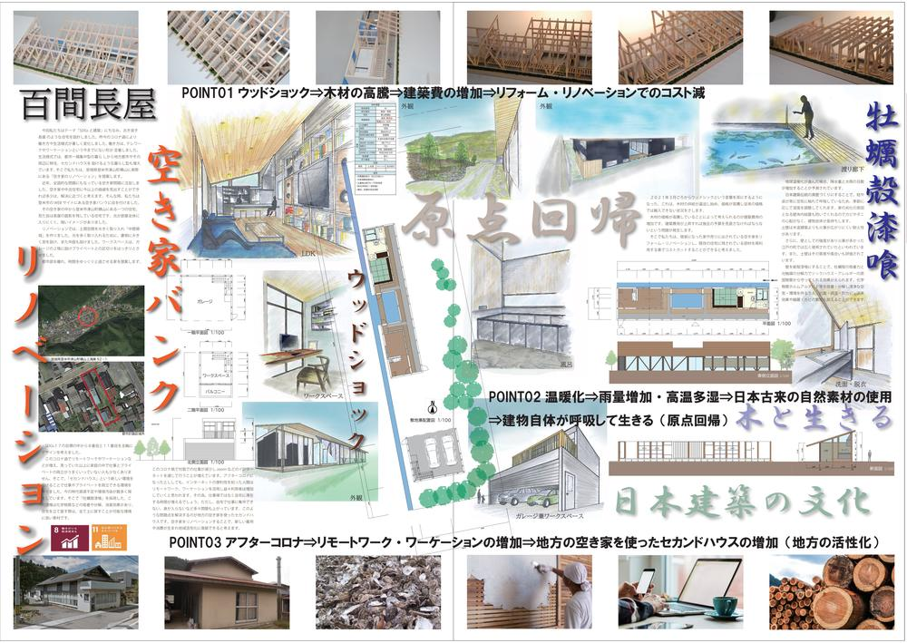